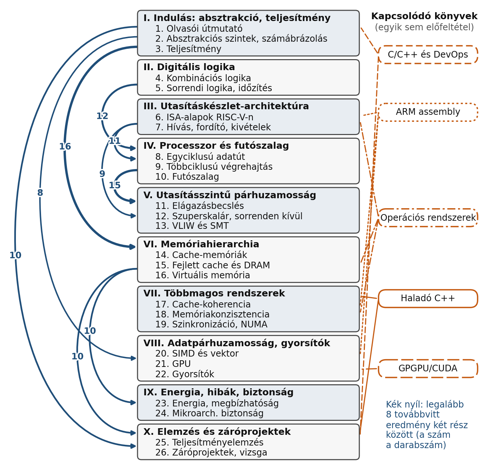
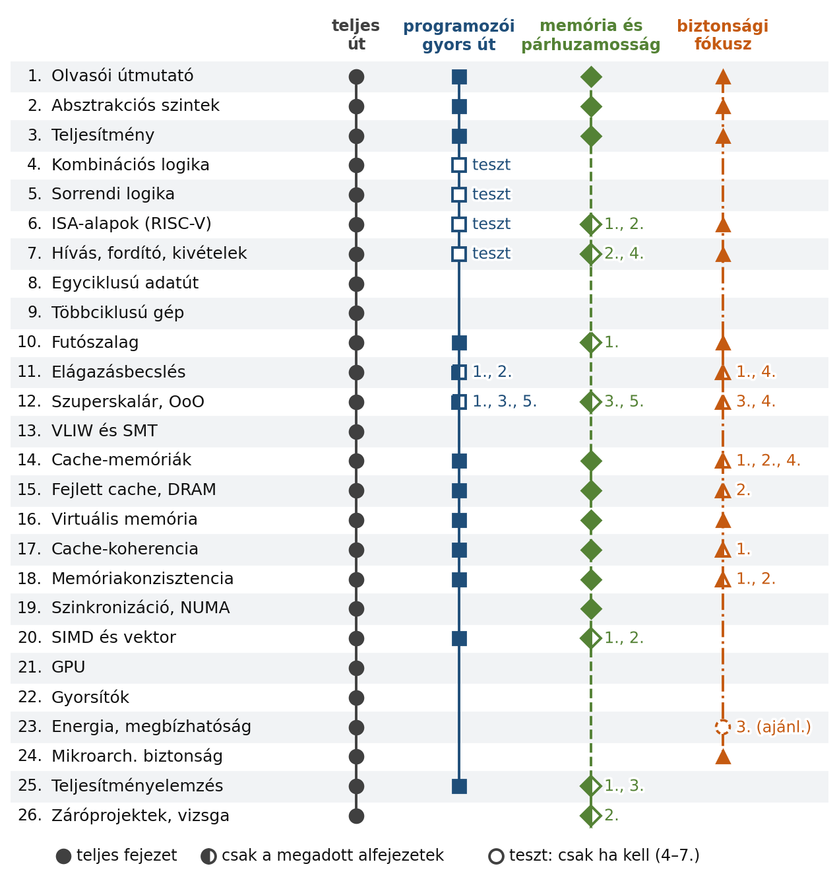
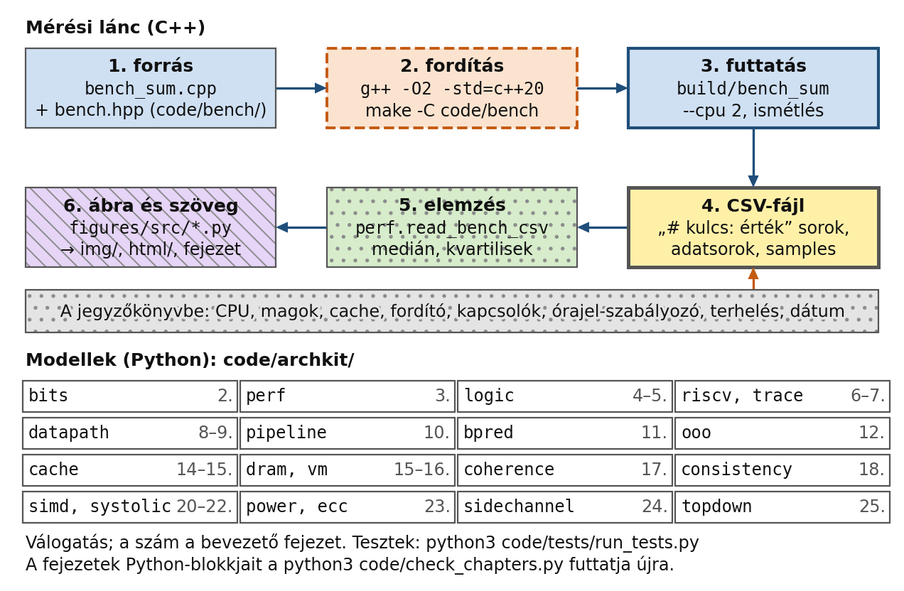
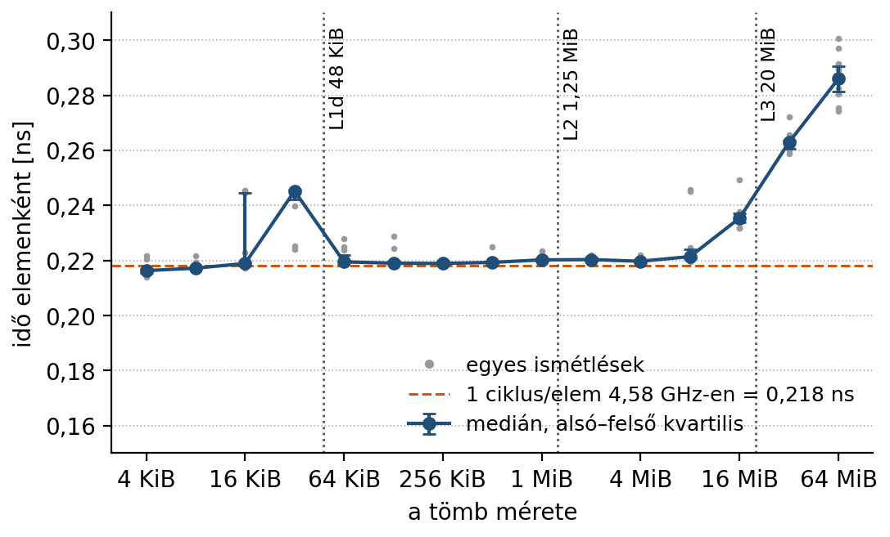

Egy C++-függvény végigmegy egy egymillió elemű tömbön, és összeadja azokat az elemeket, amelyek elérnek egy küszöböt. A kód két soros ciklus. Ha a tömb rendezett, az egy elemre jutó idő töredéke annak, amit ugyanaz a függvény ugyanazon az értékkészleten, véletlen sorrendben igényel. Az utasítások ugyanazok és az eredmény is ugyanaz, csak az adatok sorrendje más.
Egy másik program egy mutatóláncot követ: minden elem a következő címét tárolja. Ha a lánc a memóriában sorban halad, gyors; ha véletlenszerűen ugrál egy nagy tömbben, minden lépés sokszorosába kerül. Az alábbi blokk a könyv előre lemért adataiból olvassa ki ezeket a számokat (a mérés gépe egy 13. generációs Intel Core i5-13400F, 2026-11-25; a részletes körülményeket A labor: archkit, mikrobenchmarkok és mérési fegyelem írja le).
import sys; sys.path.insert(0, "code")
from archkit import perf
_, b = perf.read_bench_csv("figures/data/ca033-rendezett-tomb.csv")
pick = {r["pattern"]: r["median_ns_per_elem"] for r in b
if r["build"] == "novec" and r["core"] == "P" and r["variant"] == "branch"}
s, v = pick["sorted"], pick["random"]
print(f"branchy: rendezett {s:.2f} ns/elem, véletlen {v:.2f} ns/elem, {v / s:.1f}×")
_, c = perf.read_bench_csv("figures/data/ca051-kesleltetes.csv")
pick = {r["pattern"]: r["median_ns_per_access"] for r in c
if r["core"] == "P" and r["bytes"] == 256 * 2**20}
s, v = pick["seq"], pick["random"]
print(f"láncbejárás 256 MiB-on: sorban {s:.1f} ns, véletlenül {v:.1f} ns lépésenként")branchy: rendezett 0.22 ns/elem, véletlen 3.13 ns/elem, 14.3×
láncbejárás 256 MiB-on: sorban 3.1 ns, véletlenül 77.5 ns lépésenkéntA tizennégyszeres és a huszonötszörös különbség nem a forráskódban és nem is az algoritmus lépésszámában van, hanem abban, ahogyan a hardver végrehajtja. Ez a könyv arról szól, hogy ezt megértsd, előre meg tudd jósolni, meg tudd mérni, és ha kell, ki tudd használni.
A számítógép-architektúra a hardver és a szoftver határán álló tudomány: azt vizsgálja, hogyan épül fel a gép, mit ígér a programoknak, és milyen áron teljesíti. A könyv öt vezérkérdés köré szerveződik.
add vagy egy lw mögött regiszterek, vezetékek,
órajelciklusok és egy vezérlőegység dolgozik. Ezeket a kapuktól a
futószalagig (pipeline) felépítjük.Visszatérő minták kötik össze a válaszokat, és a könyv a nevükön hivatkozik rájuk: a vasegyenlet (a futásidő = utasításszám · ciklus per utasítás · ciklusidő), a gyorsítsd a gyakori esetet, a soros rész uralkodik (Amdahl törvénye), a késleltetést elrejteni, nem megszüntetni, a jósolj, mérj, magyarázz, és a mozgatás drágább, mint a számolás. Mindegyiket ott vezetjük be, ahol először szükség van rá.
A könyv tíz részből, huszonhat fejezetből áll, és alulról felfelé, majd kifelé halad. A térkép a részeket és fejezeteket mutatja; a bal oldali nyilak jelzik, hol épül egy későbbi rész a leginkább egy korábbi eredményeire. A nyíl melletti szám a könyv tervében szereplő, a két rész közötti továbbvitt eredmény-hivatkozások darabszáma; csak a legalább nyolcas kapcsolatokat rajzoltuk meg. A jobb oldalon a gyűjtemény kapcsolódó könyvei állnak.

Figyeld meg a leghosszabb, vastag ívet: a bevezető rész (I.) eredményeit a legtöbbször a memóriahierarchia (VI.) használja. Ez nem véletlen: a futó példák, a mérési módszer és a teljesítménymodellek a gyorsítótáraknál kapnak igazán szerepet. A második legerősebb a futószalagtól (IV.) az utasításszintű párhuzamosság (V.) felé mutat.
Röviden, részenként:
A könyv programozónak, mérnökhallgatónak és rendszerfejlesztőnek
szól, aki önállóan tanul. Feltételezzük, hogy el tudsz olvasni C-kódot
(változó, ciklus, függvény, tömb, mutató, struct), tudsz
egyszerű Python-függvényt írni és olvasni, használod a parancssort
(fordítás g++-szal, program futtatása), és ismered a
középiskolai matematikát (hatvány, logaritmus, törtek, százalék).
A kettes és tizenhatos számrendszert, a Boole-algebrát, az állapotgépeket, az assemblyt és a méréshez szükséges egyszerű statisztikát a könyv megtanítja, de csak annyit belőlük, amennyi a megértéshez kell. Elektronikát és félvezetőfizikát nem tanítunk: a tranzisztor itt kapcsoló, a kapunak késleltetése van. Az operációs rendszert csak a hardverrel közös határáig tárgyaljuk.
Hogy pontosan hol tartasz, azt a Tanulási útvonalak és belépő teszt dönti el.
A törzsanyag minden alfejezete ugyanabban a sorrendben halad (a bevezető és a záró fejezet lazább):
| Szakasz | Mit találsz benne? |
|---|---|
| Motiváció | konkrét, gyakran mért jelenség, amely miatt az új fogalom kell |
| Szemlélet | ábra vagy animáció, szavakkal, még a képletek előtt |
| Formalizmus | definíciók, összefüggések, táblák, mértékegységekkel |
| Kézi számpélda | kis példa teljesen végigszámolva |
| Kód | a modell programja vagy mikrobenchmark, futtatott kimenettel |
| Próbáld ki | kísérletek az interaktív ábrával vagy a kóddal |
| Tipikus hibák | tünet, ok, javítás |
| Önellenőrzés, Feladatok | rövid kérdések, majd A (begyakorló), B (alkalmazó), C (gondolkodtató vagy programozós) feladatok |
| Rövid összefoglaló | a megjegyzendő eredmények |
| Megoldások | a válaszok és a teljes feladatmegoldások |
Egy alfejezetet akkor érdemes lezárni, ha az önellenőrző kérdések legalább 80%-át helyesen megválaszoltad, és megoldottál legalább egy C szintű feladatot. A megoldásokat csak saját próbálkozás után nézd meg.
Néhány szabály végig érvényes, érdemes most megjegyezni:
0x, a kettes számokat
0b előtag jelöli: 0x1F
.sum, saxpy, matmul,
chase, branchy, counter (a Egy program útja: fordítás, betöltés, végrehajtás
mutatja be őket).Továbbvitt eredmény. Az alfejezetek állandó szerkezete (motivációtól a megoldásokig), a 80%-os továbbhaladási szabály és a fenti jelölések minden későbbi alfejezetben érvényesek; elsőként a Tanulási útvonalak és belépő teszt és a Rétegek a tranzisztortól a programig épít rájuk.
A könyv önálló tanulásra készült, ezért néhány munkaszokás sokat segít.
Ez a könyv a gyűjtemény több kötetének alsó rétege: azok ráépülhetnek, de egyiket sem kell előbb elolvasnod.
A klasszikus alapművek a szövegben szögletes kulccsal szerepelnek, például [S-HP] (Hennessy–Patterson: a kvantitatív szemlélet) és [S-PH-RV] (Patterson–Hennessy, RISC-V kiadás); a teljes lista a források fejezetében van.
Az ábrák három kiadásban jelennek meg. A HTML-változatban a mozgó
vagy próbálgatható ábrák interaktív lapként futnak; a PDF-ben és az
EPUB-ban ugyanezek képkocka-sorként látszanak; az egyszerű diagramok
mindenhol azonosak. A kód a könyv code/ mappájában van, és
a szövegben közölt kimenetek ténylegesen lefuttatott programokból
származnak.
A számítógép-architektúra azt vizsgálja, hogyan hajtja végre a
hardver a programokat, mit ígér nekik, és milyen áron. Ugyanaz a kód az
adatok sorrendjétől függően nagyságrenddel eltérő idő alatt futhat. A
könyv tíz részben halad a digitális logikától az utasításkészleten, a
futószalagon, a párhuzamosságon, a memóriahierarchián és a többmagos
rendszereken át az energiáig, a biztonságig és a teljesítményelemzésig.
Minden törzsalfejezet azonos szerkezetű: motiváció, szemlélet,
formalizmus, kézi példa, kód, kísérletek, tipikus hibák, feladatok,
összefoglaló, megoldások. A továbbhaladás szabálya 80%-os önellenőrzés
és legalább egy C szintű feladat. A tizedesvessző, a 0x és
0b előtag, a KiB és GB/s megkülönböztetése és a
kódformázású mintaprogram-nevek végig érvényesek. A kapcsolódó könyvek
egyike sem előfeltétel.
A könyv olvasói nagyon különböző helyről indulnak. Aki évek óta ír
C++-t, valószínűleg unná a mutatókról szóló magyarázatot, de lehet, hogy
még sosem látott Karnaugh-táblát. Aki villamosmérnöki hallgató, a
kapukat ismeri, a g++ kapcsolóit viszont nem. Ha túl sokat
feltételezünk, a 6. fejezet táján elakadsz; ha túl keveset, hetek mennek
el ismert anyagra.
Ezért érdemes az elején húsz-huszonöt percet egy rövid tesztre szánni. A teszt nem vizsga: azt mutatja meg, melyik pótló alfejezetet olvasd el, és melyik útvonalat válaszd.
A könyv anyaga fejezetekből áll, és a fejezetek egymásra épülnek. Egy tanulási útvonal ennek a láncnak egy olyan részhalmaza, amely egy adott célhoz elég. A belépő teszt két dolgot dönt el: mit kell még előtte pótolnod, és a négy útvonal közül melyik illik hozzád. Az útvonal nem börtön: ha egy hivatkozás olyan helyre mutat, amelyet kihagytál, ugorj oda.
Oldd meg papíron, segédeszköz és programfuttatás nélkül; minden kérdésnek pontosan egy helyes válasza van. A HTML-kiadásban a lenti interaktív lapon kattintva is kitöltheted, a megoldókulcs a Megoldások részben van.
0x2F tízes értéke: a) 37 b) 47 c)
57 d) 215unsigned x = 0xAB; mennyi
(x >> 4) & 0x3? a) 2 b) 3 c) 10 d) 11x 5. bitjét (a
0. a legalsó)? a) x & (1u << 5) b)
x | (1u << 5) c) x ^ 5 d)
x | 50x3C ^ 0x0F? a)
0x0C b) 0x3F c) 0x33 d)
0xC3int a[] = {10, 20, 30, 40}; int *p = a + 1; mennyi
*(p + 2)? a) 20 b) 30 c) 40 d) 13int32_t tömb a[0]
eleme a 0x1000 címen van. Mi &a[3]? a)
0x1003 b) 0x1006 c) 0x100C d)
0x1030struct node { struct node *next; int v; }; mit ad
p->next->v? a) p csomópontjának
v mezőjét b) a p utáni csomópont
v mezőjét c) p címét, v-vel
növelve d) a lánc utolsó v mezőjétj < i esetén fut.
-re
körülbelül hányszor? a) 1000 b) 500 000 c) 1 000 000 d) 2000f függvény a listaelemek közül
a páros indexűeket adja össze (az index 0-tól indul). Mennyi
f([5, 1, 7, 2, 9])? a) 21 b) 3 c) 24 d) 12[k*k for k in range(8) if k % 3 == 1] kifejezés értéke? a)
[1, 4, 7] b) [0, 9, 36] c)
[1, 16] d) [1, 16, 49]g++ -O2 -std=c++20 sum.cpp -o sum parancs? a) lefuttatja a
sum.cpp fájlt b) csak assembly fájlt készít c) csak
objektumfájlt készít d) optimalizálva sum nevű programot
készít./sum > out.csv?
a) a kimenetet az out.csv fájlba írja (felülírva) b) az
out.csv-t a program bemenetére adja c) a kimenetet az
out.csv végéhez fűzi d) összehasonlítja a kimenetet az
out.csv-velTémakörönként számold meg a helyes válaszokat. Egy témakör akkor rendben, ha a kérdéseinek legalább a kétharmada helyes (háromból kettő, kettőből kettő). A hiányos témakör pótlását az alábbi ábra táblázata adja meg. A mutató, a Python és a parancssor alapkészség: ezeket a könyv nem tanítja, ezért ha itt akadsz el, előbb a nyelvi alapokat pótold (például a C/C++ és DevOps könyvből). A számrendszereket, a bitműveleteket és a logikát a könyv megtanítja: Számábrázolás gépközelből, Boole-algebra, kapuk és a CMOS-tranzisztor, Tárolóelemek: latch, flip-flop, regiszter, SRAM.
Az ábra alsó fele a döntést mutatja: ha célirányosan a memória-párhuzamosság vagy a biztonság érdekel, azt az útvonalat kapod; általános célnál a gyors útra csak akkor lépj, ha legalább 15 válaszod helyes, és a számrendszer, a bitműveletek, a logika és az alapkészségek is rendben vannak.
Anna 12 éve ír C++-ban, szerveroldali kódot optimalizál. A mutatók, a futásidő-becslés, a Python, a parancssor és a bitműveletek témaköre hibátlan, a számrendszereknél kettő jó, a logikánál viszont csak egy. Összesen 15 pontja van, a logika mégis hiányos. Memória és párhuzamosság célt választ, ezért a memóriaútvonalat kapja, elé pedig a Boole-algebra, kapuk és a CMOS-tranzisztor és a Tárolóelemek: latch, flip-flop, regiszter, SRAM pótlását. Ugyanezekkel a válaszokkal általános célnál a teljes út jönne ki: a gyors út a logikára épít.
Béni elsőéves hallgató, a logikát most tanulta, de a mutatókkal bizonytalan: a 7–9. kérdésből egyet talált el. A mutató alapkészség, ezért a teszt azt tanácsolja, hogy először a C-alapokat pótolja, és csak utána kezdje a teljes utat. Ha most vágna bele, a futó példák tömb- és mutatókódja lenne a legnagyobb akadály, nem az architektúra.
A teszt határait is érdemes ismerni: tizennyolc kérdés csak durva mintát ad. Ha egy témakör éppen a küszöbön van, és bizonytalannak érzed, olvasd el a pótló alfejezetet; húsz perc befektetés, ami később órákat spórolhat.
A következő ábrán minden sor egy fejezet, minden oszlop egy útvonal. Telt jel: a teljes fejezet; félig telt: csak a mellette álló sorszámú alfejezetek; üres négyzet: csak akkor olvasd, ha a fejezet önellenőrző kérdésein 80% alatt maradsz.

Az útvonalak nem zárják le teljesen az előfeltételeket. Az alábbi program a könyv tervéből kiolvassa, hány alfejezetes egy útvonal, mennyi idő heti négy–öt alfejezettel, és mely közvetlen előfeltételek hiányoznak belőle.
import sys; sys.path.insert(0, "code")
from math import ceil
from pathlib import Path
from textwrap import fill
import run
book = run.Book(Path(".").resolve())
def route(spec):
"""'1-3 6.1,2' → alfejezet-azonosítók (fejezet.alfejezet jelölésből)."""
ids = []
for item in spec.split():
if "." in item:
ch, parts = item.split(".")
secs = book.chapters[int(ch) - 1]["sections"]
ids += [secs[int(k) - 1]["id"] for k in parts.split(",")]
else:
a, _, b = item.partition("-")
for chapter in book.chapters[int(a) - 1:int(b or a)]:
ids += [s["id"] for s in chapter["sections"]]
return ids
ROUTES = { # név: (olvasandó, csak teszttel ellenőrzött)
"teljes": ("1-26", ""),
"gyors": ("1-3 10 11.1,2 12.1,3,5 14-18 20 25", "4-7"),
"memória": ("1-3 6.1,2 7.2,4 10.1 12.3,5 14-19 20.1,2 25.1,3 26.2", ""),
"biztonság": ("1-3 6-7 10 11.1,4 12.3,4 14.1,2,4 15.2 16 17.1 18.1,2 24", ""),
}
for name, (read, tested) in ROUTES.items():
ids = route(read)
known = set(ids) | set(route(tested))
gaps = sorted({d for i in ids for d in book.by_id[i]["depends_on"] if d not in known})
n = len(ids)
print(f"{name}: {n} alfejezet, kb. {ceil(n / 5)}–{ceil(n / 4)} hét")
if gaps:
print(fill("hiányzó előfeltétel: " + " ".join(gaps), 90,
initial_indent=" ", subsequent_indent=" "))teljes: 85 alfejezet, kb. 17–22 hét
gyors: 44 alfejezet, kb. 9–11 hét
hiányzó előfeltétel: ca024 ca025 ca027 ca028 ca035 ca036 ca038 ca040 ca042 ca064 ca065
ca072 ca074
memória: 44 alfejezet, kb. 9–11 hét
hiányzó előfeltétel: ca012 ca013 ca014 ca015 ca019 ca020 ca022 ca024 ca028 ca031 ca035
ca036 ca037 ca038 ca040 ca072 ca074 ca080 ca082
biztonság: 39 alfejezet, kb. 8–10 hét
hiányzó előfeltétel: ca012 ca013 ca014 ca015 ca024 ca025 ca027 ca034 ca038 ca043 ca046
ca048 ca051 ca075A rövid útvonalak tehát nagyjából feleannyi idő alatt elvégezhetők,
de van mit pótolni. Ha egy alfejezet olyan előfeltételre épül, amely
nincs az útvonaladban, olvasd el legalább annak
Rövid összefoglaló szakaszát. A két célzott útvonalon ezért
néhány „kitérő” alfejezet is szerepel: a memóriaútvonalon a Kivételek, megszakítások és privilégiumszintek
(7.4), mert a virtuális memória laphibakezelése erre épül, és a Regiszterátnevezés, ROB és spekuláció (12.3); a
biztonsági úton az AMAT, a hibák osztályozása és a
többszintű cache (14.4) és A koherencia
problémája és az MSI-protokoll (17.1).
A hétbecslés durva tervezési segéd: egy kód- és feladatintenzív alfejezet (például egy szimulátor megírása) egy estét is elvihet, egy bevezető alfejezet egy órát. Érdemes az első két hét alapján saját tempót számolni, és a tervet ahhoz igazítani.
A gyűjtemény KOMPETENCIATERKEP.md fájlja kilenc
kompetenciát sorol fel (teljesítménymodellezés, mérési fegyelem,
digitális alapok, gépi kód, futószalag, memóriahierarchia, többmagos
helyesség, adatpárhuzamosság, energia és biztonság), mindegyikhez
ellenőrző alfejezettel és bizonyítékkal. Útvonaladtól függően ezekből
válaszd ki, mit akarsz igazolni, például saját szimulátorral vagy mérési
jegyzőkönyvvel. Egy ötödik, „tanítógép-építő” útvonal is szerepel ott, a
szimulátorok iránt érdeklődőknek.
Továbbvitt eredmény. A négy útvonal (teljes, programozói gyors, memória és párhuzamosság, biztonsági fókusz) és a pótló alfejezetek (Számábrázolás gépközelből, Boole-algebra, kapuk és a CMOS-tranzisztor, Tárolóelemek: latch, flip-flop, regiszter, SRAM) határozzák meg a továbbhaladást; a A labor: archkit, mikrobenchmarkok és mérési fegyelem mindegyik útvonal része, a Vegyes vizsgafeladatsor pedig a pótló témakörökre is visszakérdez. Egy fejezet akkor zárható le, ha az önellenőrzés legalább 80%-a helyes, és legalább egy C szintű feladat elkészült.
abcabcccbbcaddac--, majd
nyomj Entert. A két kihagyott logikai kérdés miatt a logika témakör
elbukik, és az általános cél a teljes utat ajánlja, pedig 16 válasz
helyes. A „Nullázás” gomb mindent töröl.A belépő teszt 18 kérdése hét témát mér: számrendszer, bitműveletek, mutatók és tömbök, futásidő-becslés, Python, parancssor, logika és tárolás. Egy témakör rendben, ha a kérdések kétharmada helyes. A számrendszert, a bitműveleteket és a logikát a könyv pótló alfejezetei tanítják; a nyelvi alapkészségeket előbb kell pótolni. Négy útvonal van: teljes (85 alfejezet), programozói gyors, memória és párhuzamosság, biztonsági fókusz. A rövid útvonalaknál a hiányzó előfeltételek összefoglalóit érdemes elolvasni. Egy fejezet akkor zárható le, ha az önellenőrzés legalább 80%-ban helyes, és elkészült legalább egy C szintű feladat. A teljes út heti négy–öt alfejezettel nagyjából öt hónap, a rövid útvonalak kb. két–három hónap; ez tervezési becslés, amelyet a saját tempódhoz igazíts.
Megoldókulcs: 1a 2b 3c 4a 5b 6c 7c 8c 9b 10b 11c 12a 13d 14d 15a 16c 17b 18c
0x2F
;
10 biten
érték.0xAB >> 4
0xA
,
ennek alsó két bitje
;
egy bit beállítása VAGY művelet a maszkkal; a XOR ott ad 1-et, ahol a
bitek eltérnek:
.p + 2 az a[3] elemre
mutat (40); a mutatóaritmetika elemméretben lép,
0xC; p->next a következő csomópont, annak
v mezője.-o a kimeneti fájl neve, a
-O2 optimalizálási szint; a > felülír, a
>> fűzne hozzá.Az alábbi program néhány választ a géppel is ellenőriz:
def f(xs):
return sum(x for i, x in enumerate(xs) if i % 2 == 0)
print(f"{45:b}", 0x2F, 2**10, (0xAB >> 4) & 0x3, hex(0x3C ^ 0x0F))
print(sum(1 for i in range(1000) for j in range(i)), hex(0x1000 + 3 * 4))
print(f([5, 1, 7, 2, 9]), [k * k for k in range(8) if k % 3 == 1])101101 47 1024 2 0x33
499500 0x100c
21 [1, 16, 49]A könyv gyakran állít olyasmit, hogy „a véletlen elérés sokszorosába kerül” vagy „a második változat gyorsabb”. Ezeknek az állításoknak csak akkor van értelmük, ha te is meg tudod ismételni őket: lefordítod ugyanazt a programot, lefuttatod, és tudod, milyen körülmények között született a szám. Egy szám jegyzőkönyv nélkül olyan, mint egy recept hőfok és idő nélkül.
Ebben az alfejezetben felállítjuk a labort: a Python-modelleket, a C++ mérőprogramokat és a mérés fegyelmét. A végére lefuttatod az első mikrobenchmarkot (microbenchmark, egyetlen jelenséget célzó kis mérőprogram), és el tudod olvasni a kimenetét.
A kísérő kódnak két ága van. A modellek Pythonban
írt kis szimulátorok a code/archkit/ csomagban: ezek
ugyanazt az eredményt adják bármely gépen, mert nem mérnek, hanem
számolnak. A mérések C++ programok a
code/bench/ mappában: ezek a valódi hardvert mérik, ezért
gépenként és alkalmanként eltérő számot adnak. Az ábra felső fele a
mérési láncot követi a forrástól a szöveg ábrájáig, az alsó fele a
modulokat és a bevezető fejezetüket mutatja.

Figyeld meg, hogy a CSV-fájl a lánc közepe: a szövegben és az ábrákon szereplő mért számok mind innen származnak, soha nem kézi átírásból.
A modellekhez Python 3.11 vagy újabb, NumPy és az ábrákhoz matplotlib
kell; a mérésekhez C++20-at tudó fordító (a könyv gépén g++
15.2). A könyv mappájából:
python3 -m venv venv && source venv/bin/activate
python3 -m pip install -r requirements.txt
python3 code/tests/run_tests.pyAz első sor virtuális környezetet (elkülönített
Python-csomagkészletet) hoz létre, a második telepíti a függőségeket, a
harmadik lefuttatja az archkit és a mérőprogramok
tesztjeit. A jó eredmény vége ilyen alakú (a tesztek száma és az idő a
gépedtől és a könyv változatától függ):
Ran <tesztek száma> tests in <idő>s
OKA mérőprogramokat a make -C code/bench fordítja a
code/bench/build/ mappába. Egyetlen program fordításakor a
make ezt a parancsot adja ki:
make -C code/bench build/bench_sum
# a kiadott parancs:
# g++ -O2 -std=c++20 -Wall -Wextra -DBENCH_FLAGS='"-O2 -std=c++20 -Wall -Wextra"' \
# bench_sum.cpp -o build/bench_sumA -O2 a szokásos optimalizálási szint, a
-std=c++20 a nyelvi változat, a -Wall -Wextra
a figyelmeztetéseket kapcsolja be. A BENCH_FLAGS makró arra
jó, hogy a program a kimenetébe is beírja, milyen kapcsolókkal
fordították.
| Modul | Mire való | Fejezet |
|---|---|---|
bits, perf, logic |
számábrázolás; teljesítménymodellek és CSV-olvasás; kapuk | 2–5. |
riscv, trace |
RV32I-értelmező és utasításnyom | 6–7. |
pipeline, bpred |
futószalag-modell, elágazásbecslők | 10–11. |
cache |
gyorsítótár-szimulátor | 14–15. |
| a többi | memória, koherencia, SIMD, energia, biztonság | 12–25. |
A teljes lista a code/README.md fájlban van. Minden
modul egy fejezettel együtt jelenik meg, és mindegyikhez tartozik teszt:
ha módosítasz rajta, a tesztek megmutatják, elrontottál-e valamit.
Egy futásidő nemcsak a programtól függ. A fontosabb torzító tényezők:
bench.hpp ezért mérés előtt bemelegítő futásokat
végez.--cpu N kapcsoló a
mérő szálat egy maghoz rögzíti.Definíció. A mérési jegyzőkönyv mindazoknak az adatoknak a listája, amelyek nélkül a mérést nem lehet megismételni vagy értelmezni.
| Mező | Honnan | Miért kell |
|---|---|---|
| processzor, magtípusok, cache-méretek | lscpu |
a gép képességei |
| memória, operációs rendszer | free, uname -r |
lapkezelés, ütemező |
| fordító és kapcsolók | g++ --version, parancssor |
a gépi kód |
| órajel-szabályozó, turbó | /sys/devices/system/cpu/ |
sebességingadozás |
| rögzítés, ismétlésszám, statisztika | a program kapcsolói | az eredmény megbízhatósága |
| terhelés, dátum | uptime, date |
háttérzaj |
| ellenőrzőösszeg eredménye | a program ok mezője |
a program helyesen számolt-e |
Az ellenőrzőösszeg (checksum) azt jelenti, hogy a program a kiszámolt eredményt egy másik úton is megkapott várt értékkel veti össze. Egy gyors, de hibásan számoló program mérése semmit nem ér.
A perf Linux-eszköz a processzor hardveres számlálóit
olvassa (ciklus, utasítás, cache-hiba). Jogosultsághoz kötött: a könyv
gépén a perf_event_paranoid értéke 4, ezért rendszergazdai
beállítás nélkül nem fut. A könyv ezért mindenhol időmérésre és
szimulátorra épít, a perf csak lehetőség (Hardveres eseményszámlálók és a perf).
bench_sumA bench_sum egy int32_t tömböt ad össze
különböző tömbméretekre, és elemenkénti időt közöl. A mért kernel:
// A mért kernel. A noinline megakadályozza, hogy a fordító a mérőciklusba olvasztva átrendezze.
__attribute__((noinline)) std::int64_t sum(const std::int32_t* a, std::size_t n) {
std::int64_t s = 0;
for (std::size_t i = 0; i < n; ++i) s += a[i];
return s;
}Egy mérés sok menetben (pass) futtatja a függvényt, hogy az idő jóval hosszabb legyen az óra felbontásánál:
auto t = bench::measure([&] {
std::int64_t s = 0;
for (long long p = 0; p < passes; ++p) {
s += sum(a.data(), n);
bench::clobber_memory();
}
last = s;
bench::do_not_optimize(s);
}, reps);A do_not_optimize arra kényszeríti a fordítót, hogy az
eredményt valóban kiszámolja (különben az egész ciklust törölhetné), a
clobber_memory pedig arra, hogy a következő menet újra
olvassa a memóriát. A measure bemelegít, majd
reps-szer méri a lambda futásidejét.
A könyv gépén (Intel Core i5-13400F, 2026-11-25, 2. CPU-ra rögzítve, 11 ismétlés) a 4 KiB-os tömb mediánja 0,2163 ns elemenként, a program becslése szerint a mag 4,58 GHz-en járt.
A negyedik lépés a legbeszédesebb: elemenként nagyjából egy órajelciklus telik el. Ennek oka a ciklus szerkezete: minden összeadás az előző eredményére vár, és egy egész összeadás a mai x86-magokon egy ciklus alatt készül el [S-AGNER], tehát a lánc nem haladhat gyorsabban (ezt a ILP, függőségek és statikus ütemezés alfejezet oldja fel több akkumulátorral).
A mérés kimenete CSV, # kulcs: érték kezdetű
jegyzőkönyvsorokkal. Ezt a perf modul
read_bench_csv függvénye alakítja szótárrá és sorlistává. A
könyv adatfájlja a code/bench/measure.py szkripttel
készült, amely a rendszeradatokat is hozzáírta.
import sys; sys.path.insert(0, "code")
from archkit import perf
meta, rows = perf.read_bench_csv("figures/data/ca002-sum.csv")
for key in ("date", "cpu", "cache_p_l1d", "cache_p_l2", "cache_p_l3", "host_compiler",
"build_flags", "governor", "pin", "reps", "ghz_est", "ok_all"):
print(f"{key:13} {meta[key]}")date 2026-11-25T19:50:29+01:00
cpu 13th Gen Intel(R) Core(TM) i5-13400F
cache_p_l1d 48K, 12 utas, sor 64 B, megosztva: cpu 2-3
cache_p_l2 1280K, 10 utas, sor 64 B, megosztva: cpu 2-3
cache_p_l3 20480K, 10 utas, sor 64 B, megosztva: cpu 0-15
host_compiler g++ (Ubuntu 15.2.0-16ubuntu1) 15.2.0
build_flags -O2 -std=c++20 -Wall -Wextra -pthread
governor powersave
pin cpu 2
reps 11
ghz_est 4.582
ok_all 1Ez a jegyzőkönyv magja. Most a mérési sorok:
ghz = float(meta["ghz_est"])
print(" méret ns/elem ciklus/elem IQR/medián")
for r in rows:
med = r["median_ns_per_elem"]
iqr = r["q3_ns_per_elem"] - r["q1_ns_per_elem"]
kib = r["bytes"] // 1024
print(f"{kib:7} KiB {med:.4f} {med * ghz:8.2f} {100 * iqr / med:5.1f} %") méret ns/elem ciklus/elem IQR/medián
4 KiB 0.2163 0.99 0.7 %
8 KiB 0.2172 1.00 0.3 %
16 KiB 0.2189 1.00 12.1 %
32 KiB 0.2452 1.12 1.4 %
64 KiB 0.2195 1.01 1.2 %
128 KiB 0.2190 1.00 0.5 %
256 KiB 0.2189 1.00 0.6 %
512 KiB 0.2193 1.00 0.3 %
1024 KiB 0.2202 1.01 0.5 %
2048 KiB 0.2203 1.01 0.5 %
4096 KiB 0.2197 1.01 0.4 %
8192 KiB 0.2214 1.01 1.4 %
16384 KiB 0.2354 1.08 1.4 %
32768 KiB 0.2629 1.20 1.1 %
65536 KiB 0.2860 1.31 3.1 %A IQR (interkvartilis terjedelem) a felső és az alsó
kvartilis különbsége: az ismétlések középső felének szélessége. Kis
érték stabil mérést jelez; a 16 KiB-os sor kilóg, erről a 4. feladat
szól. A mért görbét az ábra mutatja.

A függőleges vonalak a processzor három gyorsítótárszintjének méretét jelölik. Sokan éles lépcsőket várnak ezeknél, de a görbe a tömb méretének ezerszeres növelése alatt is jórészt lapos, és érdemben csak a 20 MiB-os harmadik szint mérete körül és fölött emelkedik, 64 MiB-nál körülbelül 30%-kal. A sorban haladó olvasást a hardver előre látja és előre betölti, a lánc pedig amúgy is ciklusonként egy elemet bír feldolgozni. A cache-szintek éles lépcsőit véletlen elérés mutatja majd meg (Lokalitás és a memóriahierarchia).
Továbbvitt eredmény. A mérési lánc
(bench_sum forrás → fordítás ismert kapcsolókkal →
rögzített, ismételt futtatás → # kulcs: érték
jegyzőkönyvsorokat, median_*, q1_*,
q3_*, ok és samples oszlopokat
tartalmazó CSV → archkit.perf.read_bench_csv) a könyv
minden mérésének mintája; a Benchmarkolás: mérni
tanulni, a Lokalitás és a memóriahierarchia
és a Memóriavezérlő, sávszélesség és mérés ezt
használja tovább.
Továbbvitt eredmény. A mérési jegyzőkönyv sablonja: processzor, magtípusok és cache-méretek, memória és kernel, fordító és kapcsolók, órajel-szabályozó és turbó, magrögzítés, ismétlésszám és statisztika, terhelés, dátum, ellenőrzőösszeg. Ezt a Benchmarkolás: mérni tanulni, a Hardveres eseményszámlálók és a perf és a 2–3. záróprojekt: cache-szimulátor és mikrobenchmark-sorozat várja el.
bench_sum programot, és futtasd:
code/bench/build/bench_sum --cpu 2 --max-kib 65536 --reps 11 > sajat.csv.
Jósold meg előre, hány ciklus/elem lesz a kis méreteken, majd számold ki
a fenti kóddal (a saját órajeledet a # ghz_est sorból
veszed).--cpu nélkül is, és hasonlítsd össze a
kvartiliseket. Melyik futás szór jobban?A python3 code/bench/measure.py teljes mérési sorozata
felülírná a könyv figures/data/ fájljait, ezért a saját
kísérletekhez a fenti közvetlen futtatást vagy a --quick
kapcsolót használd.
do_not_optimize és
ellenőrzőösszeg; nézd meg a fordító assemblyjét.-O0 fordítás vagy hibakereső build.
Javítás: -O2, és a kapcsolók a
jegyzőkönyvben.archkit modelljeinek és a
bench programoknak az eredménye gépek között?do_not_optimize és az ellenőrzőösszeg?perf?samples
oszlopa alapján határozd meg, hány ismétlés esik 0,23 ns fölé. A minták
a mérés sorrendjében állnak. Mire utal ez?figures/data/ca044-lepcsok.csv fájlból kiírja a P- és E-mag
idejét és arányát 4 KiB, 1 MiB és 64 MiB méretnél, ciklus/elemre
átszámolva is (r1_ghz_est_end a P-,
r2_ghz_est_end az E-magé).bench_sum görbéjét, és írd meg a teljes jegyzőkönyvet a
fenti táblázat szerint. Magyarázd meg legalább egy eltérést a könyv
ábrájától, és jelöld, melyik magyarázatod feltételezés.A labor két ága az archkit Python-modellek, amelyek
gépfüggetlenül számolnak, és a code/bench/ C++
mikrobenchmarkok, amelyek a valódi gépet mérik. A mérési lánc: forrás,
fordítás ismert kapcsolókkal, rögzített maghoz kötött, bemelegített és
ismételt futtatás, jegyzőkönyvsorokat és mintákat tartalmazó CSV,
elemzés a perf.read_bench_csv függvénnyel. Az
ellenőrzőösszeg a helyességet, a medián és a kvartilisek a szóródást
mutatják. A jegyzőkönyv tartalmazza a processzort, a cache-méreteket, a
fordítót, az órajel-szabályozót, a rögzítést, a terhelést és a dátumot.
A bench_sum a könyv gépén kis tömbön kb. egy ciklus alatt
dolgoz fel egy elemet, mert az összeadások láncot alkotnak; az éles
cache-lépcsők sorban haladó olvasásnál alig látszanak. A
perf hasznos, de nem feltétel: a könyv mindenhol időmérésre
és szimulátorra épít.
1. GB/s; ciklus/elem.
2. Milyen processzor és mag? Mekkora a tömb? Melyik fordító és kapcsoló? Hány ismétlés, medián vagy átlag? Mekkora a szóródás? Rögzített volt-e a szál, mi futott mellette? Ellenőrizte-e az eredmény helyességét?
3. ns/elem. Ez nem jóslat az E-magra: ott a ciklusszám is más lehet, ezt az 5. feladat méri meg.
4. A program:
for r in rows:
if r["bytes"] in (16 * 1024, 32 * 1024):
s = [float(v) for v in str(r["samples"]).split(";")]
high = "".join("M" if v > 0.23 else "." for v in s)
print(f"{r['bytes'] // 1024} KiB: {high} magas: {high.count('M')}/{len(s)}")16 KiB: .......MMMM magas: 4/11
32 KiB: MMMMMMMMM.. magas: 9/11A magas értékek (M) időben egybefüggő sávot alkotnak: a 16 KiB-os mérés vége és a 32 KiB-os eleje, a két sorozat egymás után futott. Ez inkább egy átmeneti zavarra (például órajel-visszaesésre vagy háttérterhelésre) utal, mint a tömbméret hatására; a mérés azonban nem dönti el az okot. Ezért kell több mérést, véletlen sorrendben vagy megismételve végezni (Benchmarkolás: mérni tanulni).
m, data = perf.read_bench_csv("figures/data/ca044-lepcsok.csv")
freq = {"P": float(m["r1_ghz_est_end"]), "E": float(m["r2_ghz_est_end"])}
for kib in (4, 1024, 65536):
t = {r["core"]: r["median_ns_per_elem"] for r in data if r["bytes"] == kib * 1024}
c = {k: t[k] * freq[k] for k in t}
print(f"{kib:6} KiB P {t['P']:.3f} ns ({c['P']:.2f} c) E {t['E']:.3f} ns"
f" ({c['E']:.2f} c) E/P {t['E'] / t['P']:.2f}") 4 KiB P 0.222 ns (1.02 c) E 0.463 ns (1.52 c) E/P 2.08
1024 KiB P 0.226 ns (1.03 c) E 0.382 ns (1.25 c) E/P 1.69
65536 KiB P 0.281 ns (1.28 c) E 0.455 ns (1.50 c) E/P 1.62Az E-mag ciklusban is lassabb, tehát nemcsak az órajel különbözik. Ugyanaz a gépi kód két eltérő megvalósításon fut; erre épít a Rétegek a tranzisztortól a programig. A 4 KiB-os E-magos érték magasabb, mint a nagyobb méreteké; ennek okát ez a mérés nem mutatja meg.
Elfogadható megoldás: a táblázat minden mezője kitöltve (a hiányzó, például nem olvasható turbóállapot is jelölve), a görbe a saját CSV-ből rajzolva, és az eltérésekhez a mérhető tényező (órajel, cache-méret) elkülönítve a feltételezéstől (háttérterhelés, szabályozó). Számot itt nem adunk, mert gépfüggő.